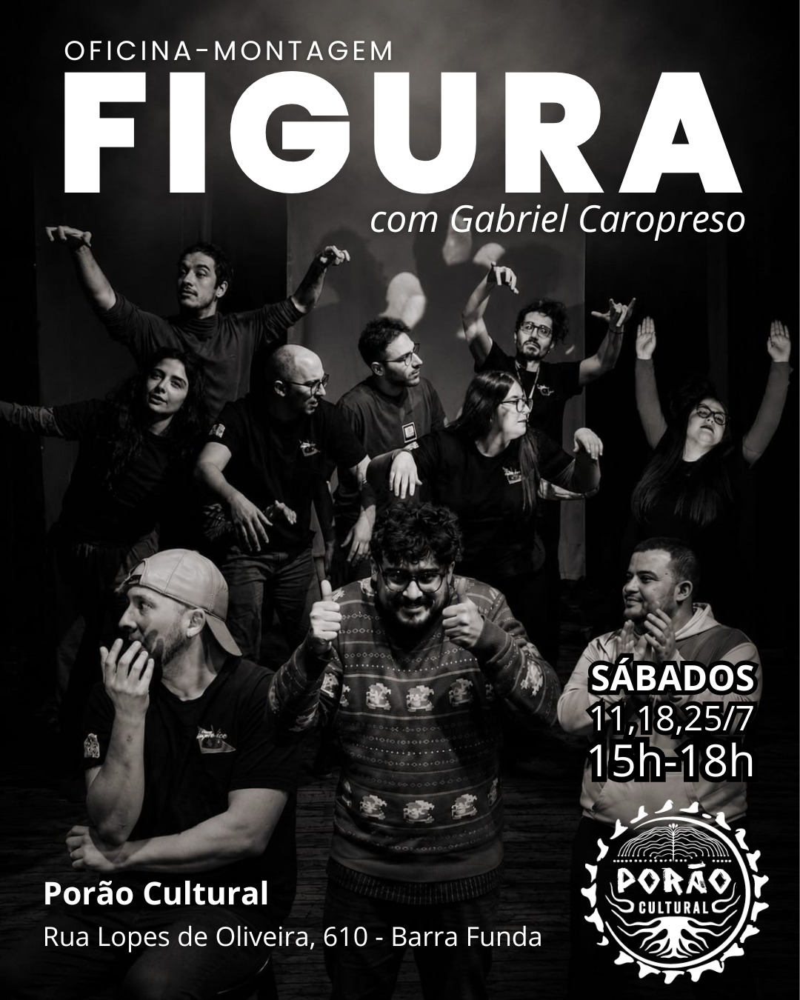
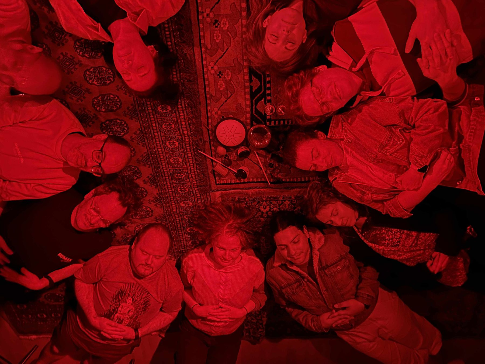
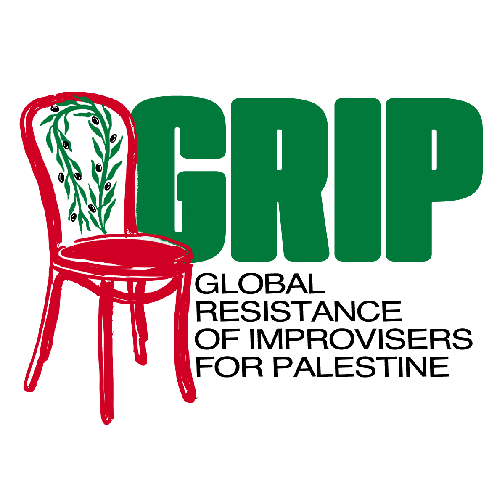

Uma escola de improvisação no centro de São Paulo.
A gente faz teatro.
A IMPRO.SP é uma instituição cultural independente. Escola, coletivo artístico e laboratório de pesquisa. Formamos artistas, desenvolvemos linguagem cênica e criamos comunidade.
Aqui, improvisação significa dramaturgia instantânea, escuta, presença e criação coletiva. Palco sem rede de proteção.
Nossa turnê de lançamento: oficinas, espetáculos com elenco local e aberturas de processo em cinco cidades, com a improvisadora ateniense Maro Lesiotti.

Estímulos visuais para a improvisação, com Gabriel Caropreso. Três sábados de imagens virando cena, fechando com mostra aberta a partir das fotos da plateia.
Além da sala de ensaio.
A IMPRO.SP não tem sede fixa porque ocupa a cidade. Nosso trabalho acontece ocupando teatros e espaços parceiros.
Mas a escola também é ponto de encontro. Nosso calendário integra espetáculos, shows, jams, festas, rodas de samba e encontros de bar.
Criamos cena construindo comunidade.

jam da escola ↑
A IMPRO.SP segue as orientações do GRIP para criar ambientes seguros e favorecer a participação de pessoas em situação de opressão.
Não tem palco pra genocídio na nossa escola.